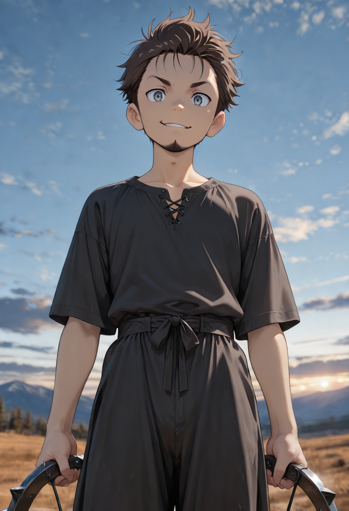
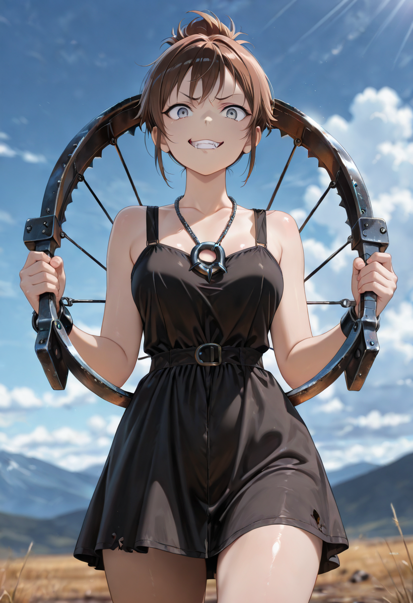

Trespassers of the Sacred Wood
They come from the outer villages, drawn by tales of strange creatures that do not die easily — creatures whose bones and hides fetch high prices in cities that ask no questions. They carry traps designed for large animals and crossbows loaded with iron bolts. They carry no respect for the land they enter.
The Forgotten do not hate them. They pity them, the way one pities a man who puts his hand into fire because no one told him it was burning. But Malicott's land does not tolerate trespass, and pity does not dull the roots that rise from the ground to catch a foot mid-step.
Most poachers never reach the deep forest. The ones who do rarely leave it.
Tactical Data
Tier1
HP80
ATK22
INI48
Trap Set
Base SkillPlaces a hidden trap. The next enemy unit that moves against this unit takes 30% of the Poacher's ATK as bonus damage at the start of combat.
Desperation Shot
Base SkillWhen below 30% HP, the Poacher fires a panicked bolt dealing 150% ATK to a single target.